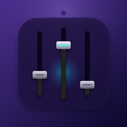
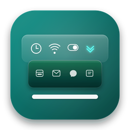
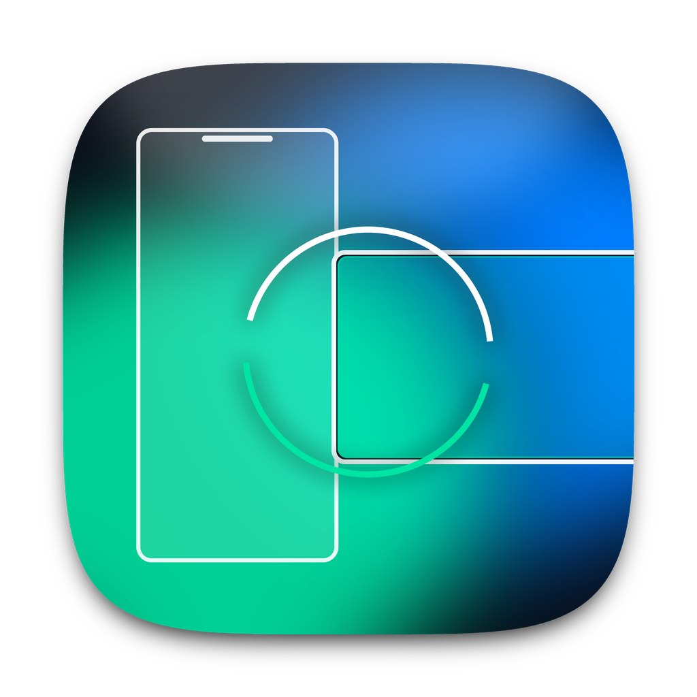
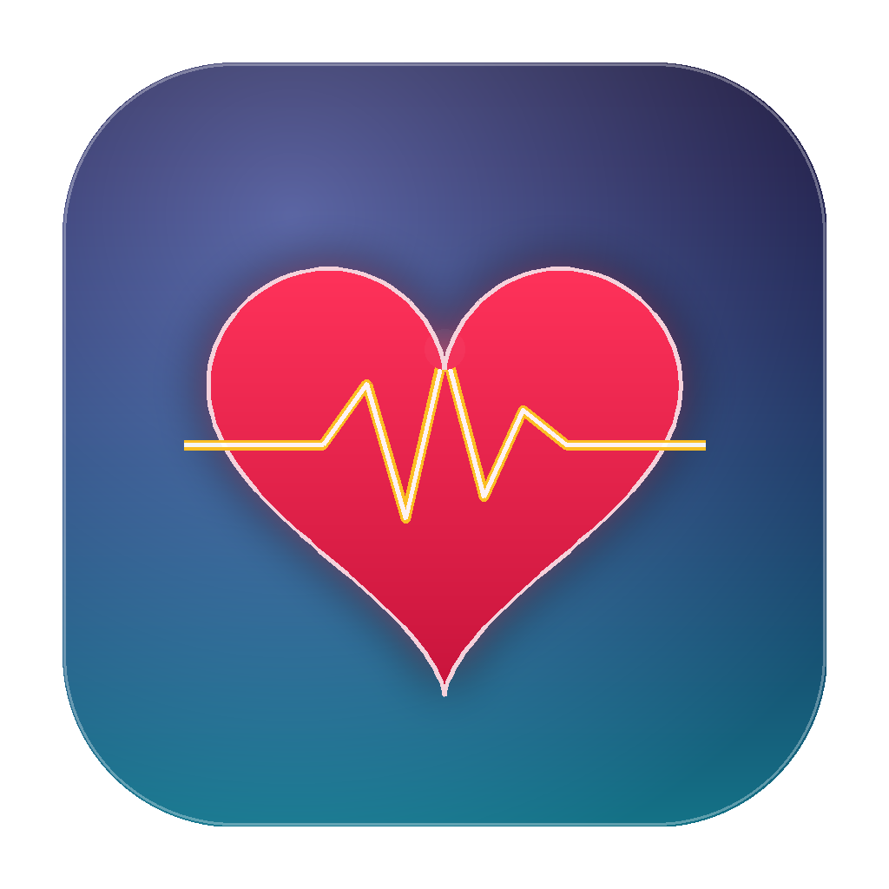
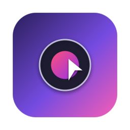
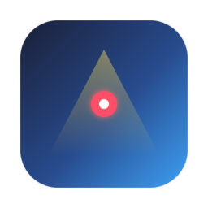
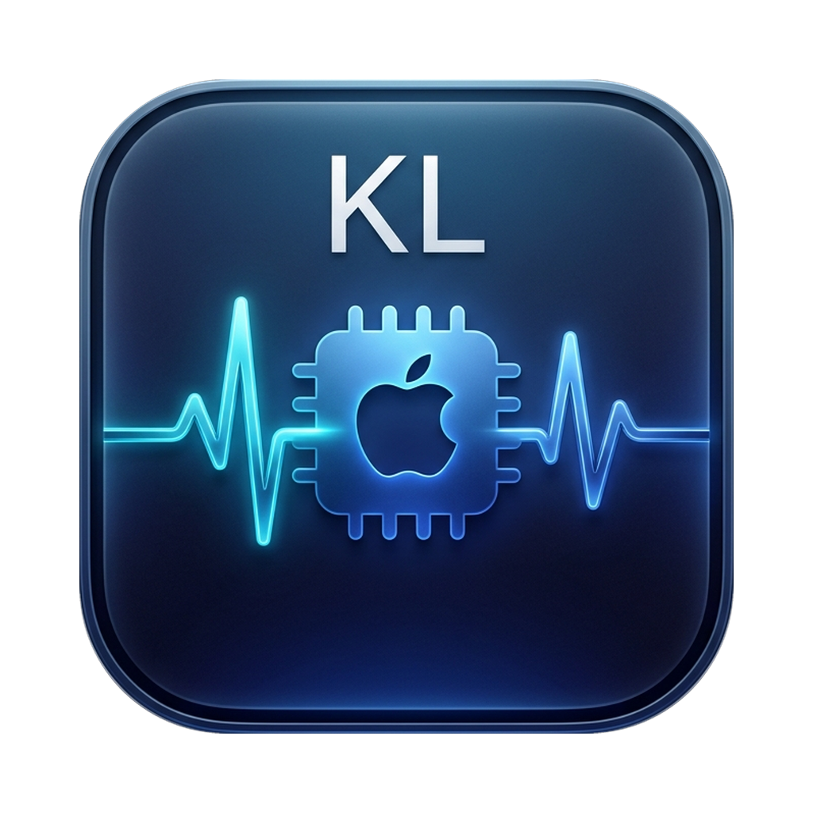

Support & guides

VolMixPer-app audio
BarNest ProMenu bar organization
NextMirrorHarmonyOS screen mirroring
MindChargeSubscription & mood assets
SmoothCastScreen recording & guides
PresenterDeckPresentation timing & spotlight
MacPulseMac performance diagnostics支持与指南
support@kevinlabs.appサポート・ガイド
support@kevinlabs.app지원 및 가이드
support@kevinlabs.appHilfe & Anleitungen
VolMixApp-Audio-Mixer
BarNest ProMenüleisten-Verwaltung
NextMirrorHarmonyOS Bildschirm-MirroringMindChargeAbo-Kosten & Zufriedenheit
SmoothCastAufnahme & Anleitungserstellung
PresenterDeckPräsentations-Timer & Spotlight
 NetDoctorNetzwerkdiagnose & Problemlösung
NetDoctorNetzwerkdiagnose & Problemlösung
 KSIC StudioArbeitslinks & Ressourcen-Hub
MacPulseMac-Leistungsdiagnose
KSIC StudioArbeitslinks & Ressourcen-Hub
MacPulseMac-Leistungsdiagnose
support@kevinlabs.appAide et guides
VolMixAudio par application
BarNest ProGestion de la barre des menus
NextMirrorRecopie d’écran HarmonyOSMindChargeAbonnements & humeur
SmoothCastCapture vidéo & guides
PresenterDeckMinuteur de présentation & projecteur
NetDoctorDiagnostic réseau & dépannage
KSIC StudioHub de liens & ressources pro
MacPulseDiagnostic des performances Mac
support@kevinlabs.appAyuda y guías
VolMixAudio por aplicación
BarNest ProOrganización de barra de menú
NextMirrorDuplicación de pantalla HarmonyOSMindChargeCostes de suscripción y ánimo
SmoothCastGrabación de pantalla y guías
PresenterDeckTemporizador de presentación y foco
NetDoctorDiagnóstico y solución de red
KSIC StudioCentro de recursos y enlaces
MacPulseDiagnóstico de rendimiento Mac
support@kevinlabs.appSuporte e guias
VolMixÁudio por aplicativo
BarNest ProOrganização da barra de menus
NextMirrorEspelhamento HarmonyOSMindChargeAssinaturas e humor
SmoothCastGravação de tela e tutoriais
PresenterDeckCronômetro de apresentação e foco
NetDoctorDiagnóstico e reparo de rede
KSIC StudioCentral de links e trabalho
MacPulseDiagnóstico de desempenho Mac
support@kevinlabs.app